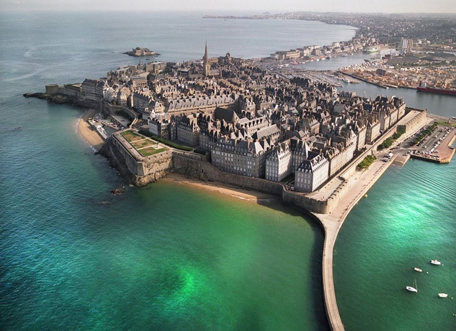
Brittany Ferries was offering a great deal for a 3-night trip to St.Malo from the ferry port in Plymouth. We boarded at night and had a comfortable cabin for the overnight trip - arriving into St.Malo early the following morning.
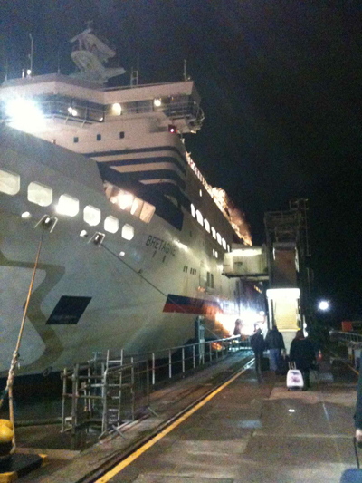
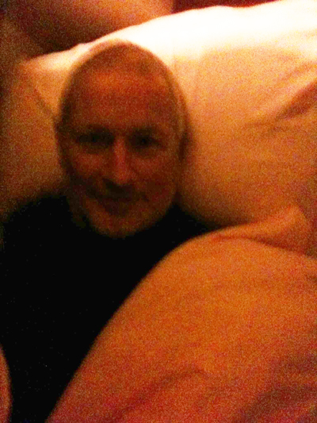
Our hotel (Hotel de l'universe) was cheap and cheerful but very conveniently situated to explore the town.
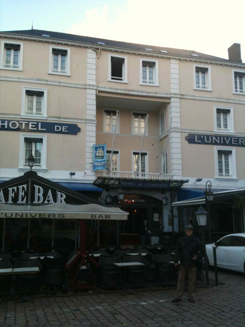
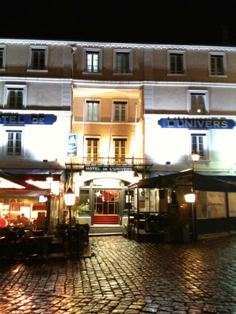
The hotel was directly opposite the city's impressive medieval castle, the Château de St Malo, which was once owned by the Dukes of Brittany. From the top of the château it is possible to see all over the town - including the Gothic and Romanesque Cathédrale de St Malo.
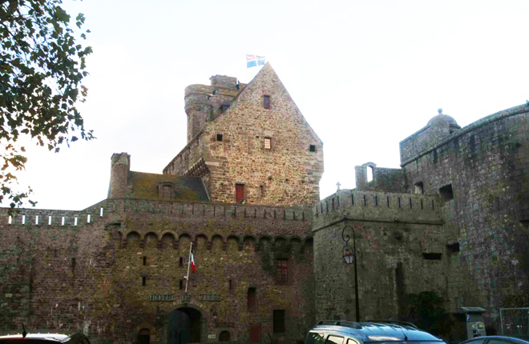
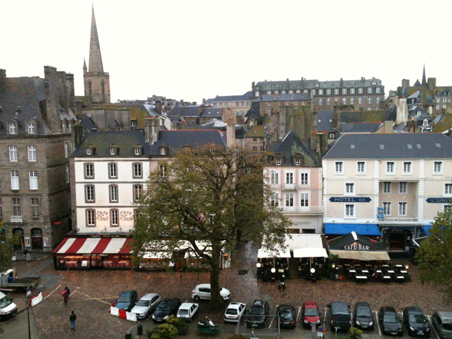
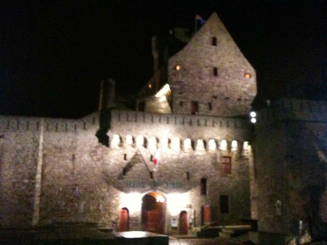
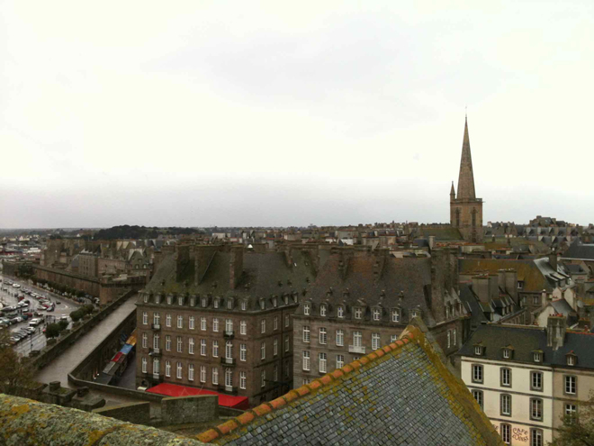
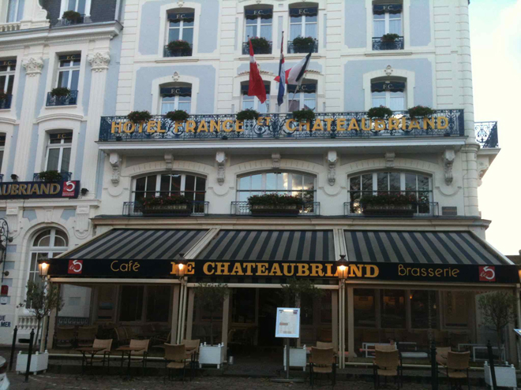
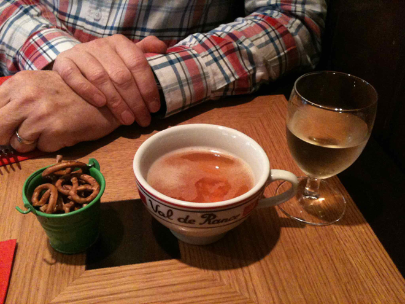
After lunch we braved the cold and did some sightseeing, including a brisk walk along the sea walls.
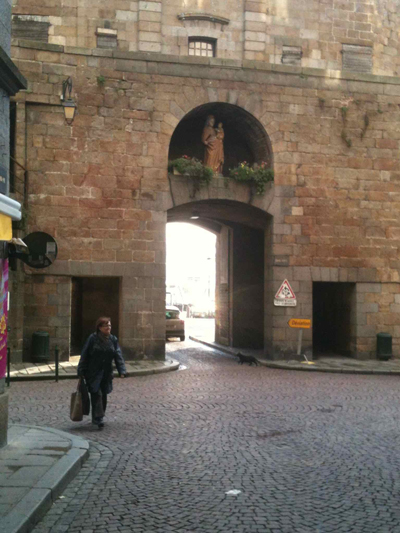
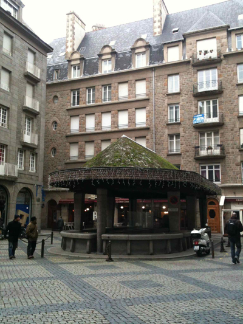
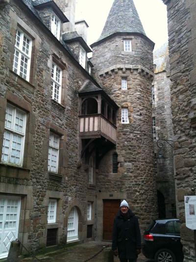
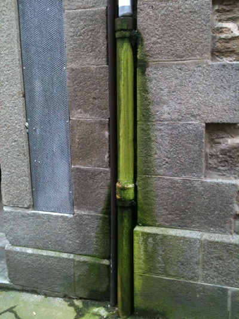
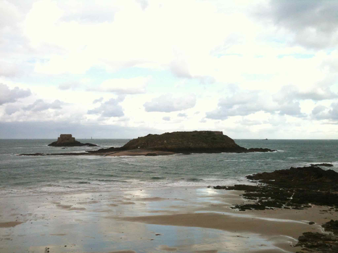
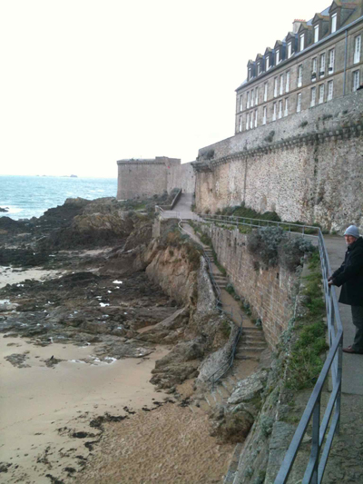
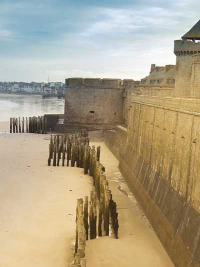
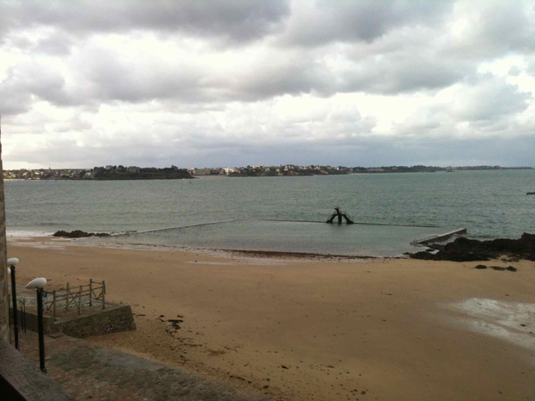
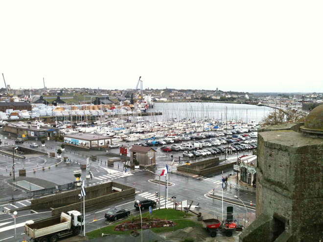
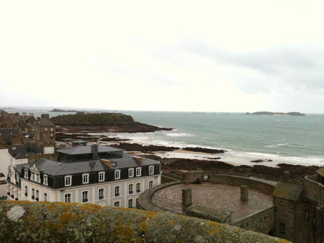
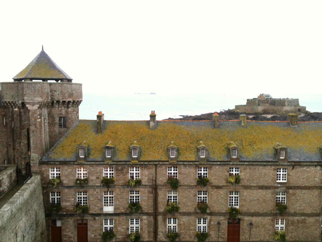
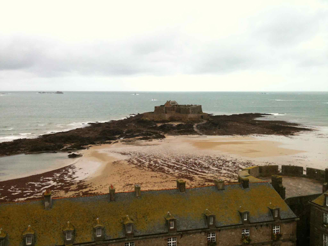
It was very cold in St.Malo but all restaurants had outdoor heaters and many had plastic canopies which successfully kept out the wind and rain - and which were mesmerising to watch in the wind.
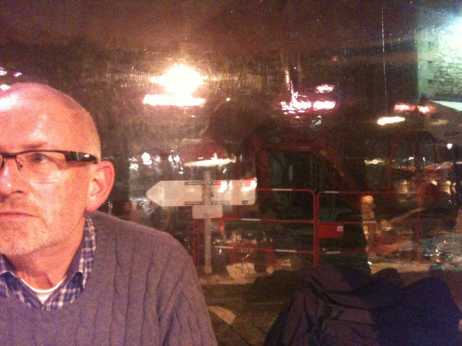
Up early for our trip home and we saw our ferry in the early morning light. That was the best of the weather as it closed in and was fairly choppy for the trip back across the Channel.
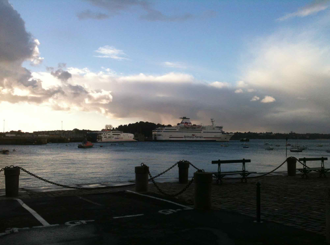
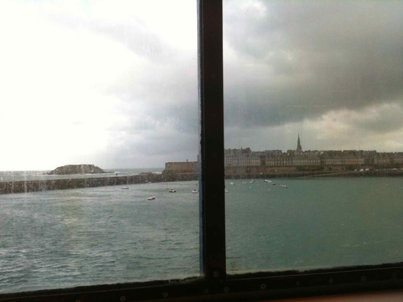